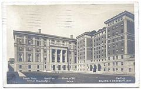
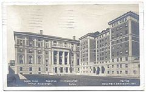

О Михајлу Пупину
Михајло Идворски Пупин је рођен 9. октобра 1854. године, по грегоријанском календару, или 27. септембра 1854. године по јулијанском календару, у селу Идвор (данас у општини Ковачица) у Банату (тада Аустријско царство, данас Србија). Отац му се звао Константин, а мајка Олимпијада. Деда по оцу му се звао Арсеније, а Пупини су у Идвори забележени од средине 18. века. По одласку у Америку, додао је презиме „Идворски“ (енгл. Michael Idvorsky Pupin), чиме је нагласио своје порекло. Имао је четворицу браће и пет сестара, од тога су остале три сестре: Персида, Љубица и Христина. Породица Пупин је аутохтона у Банату, где живи барем од прве половине 18. века. Пупини носе типично словенску/српску Хаплогрупу I2.
Образовање
Основно образовање Михајло је стицао најпре у свом родном месту, у српској православној основној школи, а потом у немачкој основној школи у Црепаји. Средњу школу уписао је 1871. године у Панчеву прво у Грађанској школи, а потом у Реалки. У гимназији наставља дружење са Орловаћанином Урошем Предићем, започето у Црепаји. Већ тада се истицао као талентован и даровит ученик, и био одличног успеха, због чега му је додељена стипендија. Стипендију је добио и захваљујући залагању проте Живковића који је у њему препознао таленат вредан улагања. Због његове активности у покрету Омладине српске, која је у то време имала сукобе са немачком полицијом морао је да напусти Панчево. Године 1872, одлази у Праг, где је, захваљујући стипендији коју је примао из Панчева, наставио шести разред и први семестар седмог разреда. Након очеве изненадне смрти, у марту 1874, у својој двадесетој години живота донео је одлуку да прекине школовање у Прагу због финансијских тешкоћа и да оде у Америку. У САД је следећих пет година радио као физички радник и паралелно учио енглески, грчки и латински језик. Након три године похађања вечерњих курсева, у јесен 1879. године положио је пријемни испит и уписао студије на Колумбија универзитету у Њујорку. На студијама је био ослобођен плаћања школарине зато што је био примеран студент, а на крају прве године добио је две новчане награде за успех из грчког језика и математике. Током школовања углавном се издржавао држањем приватних часова и радећи физички тешке послове. Студије је завршио 1883. године са изузетним успехом из математике и физике, при чему је примио диплому првог академског степена. Потом се вратио у Европу, и то најпре у Уједињено Краљевство (1883—1885) где је наставио школовање на Универзитету Кембриџ захваљујући добијеној стипендији за студије математике и физике. Након школовања у Кембриџу, Пупин је студије експерименталне физике започео на Универзитету у Берлину 1885. године код професора Хермана фон Хелмхолца, након чега је 1889. године одбранио докторску дисертацију из области физичке хемије, на тему: "Осмотски притисак и његов однос према слободној енергији“.
 
